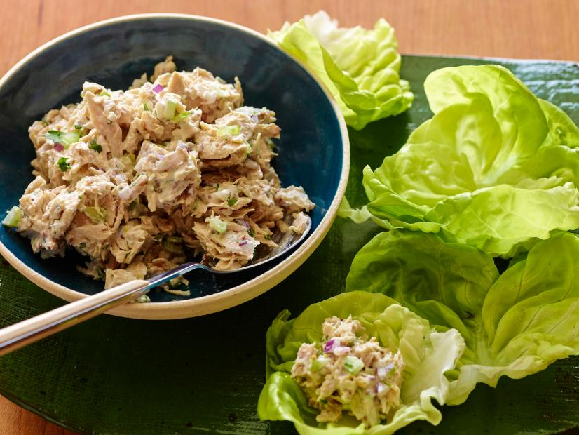

Tuna salad

Description
While we love many kinds of tuna salad, this classic version tops them all.
The crispy celery and red onion add zest and crunch, while mayonnaise and a touch of mustard marry it all together.
The lemon juice is optional as it’s not traditional,
but we strongly recommend it to brighten up the flavors of the final dish.
Ingredients
- 3/4 cup canlia oil
- 1/4 cup lemon juice
- 2 garlic cloves, minced
- 1/2 teaspoon salt
- 1/2 teaspoon pepper
- 2 bunches (1 pound each) romaine, torn
- 2 cups chopped tomatoes
- 1/2 cup shredded Swiss cheese
- 2 cans (5 ounces each) chunk light tuna in water, drained
- 2/3 cup slivered toasted almonds, optional
Steps
- In a jar with a tight-fitting lid, combine the oil, lemon juice, garlic, salt and pepper; cover and shake well. Chill.ol
- In a large serving bowl, toss the romaine, tomatoes, Swiss cheese, tuna, almonds if desired, and Parmolesan cheese.
- Shake dressing; pour over salad and toss. Add bacon and croutons, if desired; serve immediately.